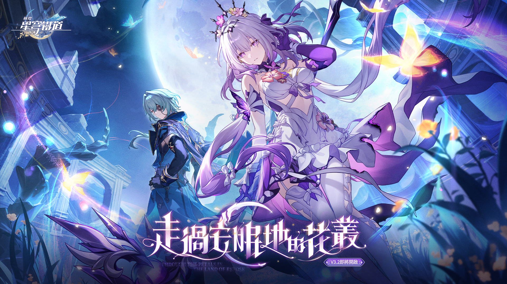
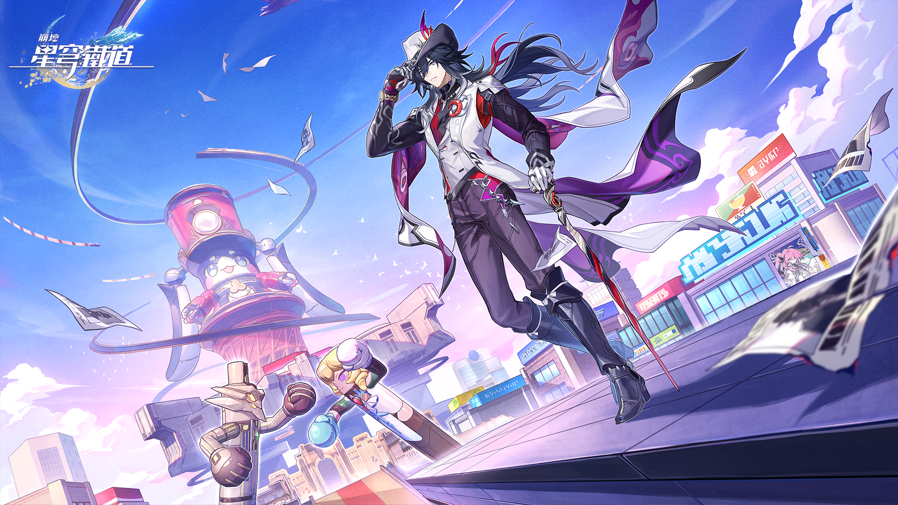
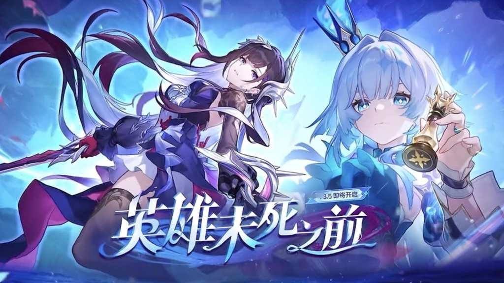
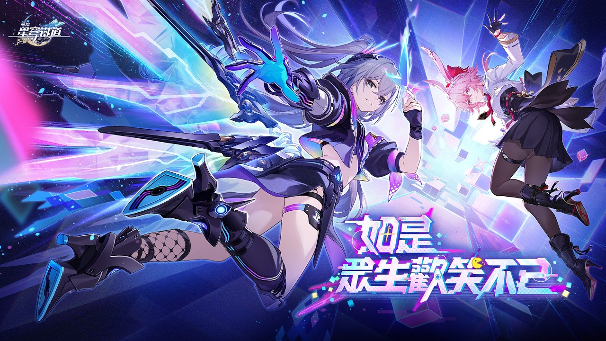

往者一生忽忽，來者一夜漫漫——迷途的人啊，請橫渡那條無人航行過的冥河，請走進那片安提靈盛開的花叢。
幸福的呢喃蔓延，往日的惡靈重現。聚光燈下，英雄行走在崇拜與憎惡鑄就的空中軌道，稍不注意便會跌落其間。聽吶！天空的盡頭傳來嗤笑，是破曉的鳴笛還是荒誕劇的開幕表演？
無數火種遍佈夜幕，燃著各自的光焰——但唯有一顆星，永遠定止於滄溟。
在接近幻月的塔頂，愚人將人心織成掌中的提線劇場。此刻，人們被賜予了歡愉的自由；此刻，人們被拷上了幸福的枷鎖……
©南投高中電子商務科 | 游淳喻